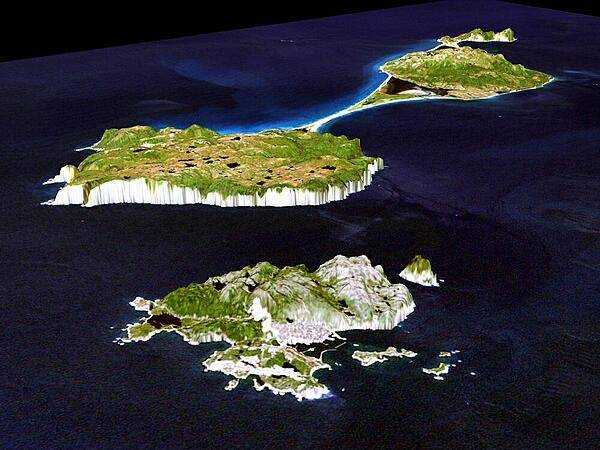
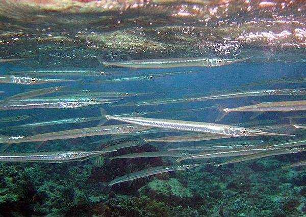
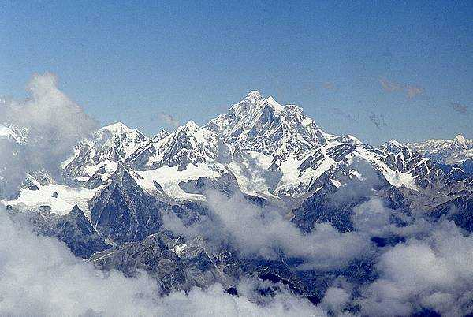

Saint Pierre and Miquelon
January 30, 2024
This 3-D perspective is a view of Saint Pierre (forefront) and Miquelon (background),
located in the North Atlantic Ocean south of Newfoundland, Canada.
These islands, along with five smaller islands, are a self-governing territory of France.
Saint Pierre and Miquelon, first settled by the French in the 17th century,
is the last vestige of France’s once vast North American possessions and became a French overseas collectivity in 2003.
Most of the population of approximately 5,200 is found on Saint Pierre Island, with a small settlement on the north end of Miquelon Island.

Reef Needlefish
January 29, 2024
The reef needlefish of American Samoa swim near the surface of the water and are capable of making short jumps out of the water at up to 60 km/h (37 mph).
Reef Needlefish often leap over the decks of shallow boats rather than going around them.
Artificial light used by night fishermen and divers across the Pacific Ocean excites the fish and increases their jumping,
resulting in numerous reports of "attacks" by schools of needlefish.
Their sharp beaks can inflict deep puncture wounds and often break off inside the victim.
Because many Pacific Islander communities fish on reefs from low boats, needlefish present a greater risk of injury than sharks,
with occasional deaths attributed to the fish.

Mount Everest
January 28, 2024
An aerial view of the Himalayas with windswept Mount Everest in the center.
The mountain is located on the Nepal-China border and is shared by both countries.
Mount Everest is the highest point on Earth above sea level at 8,849 m (29,025 ft).
The mountain was named after Sir George Everest, a British surveyor and geographer who served as the Surveyor General of India from 1830-1843.
